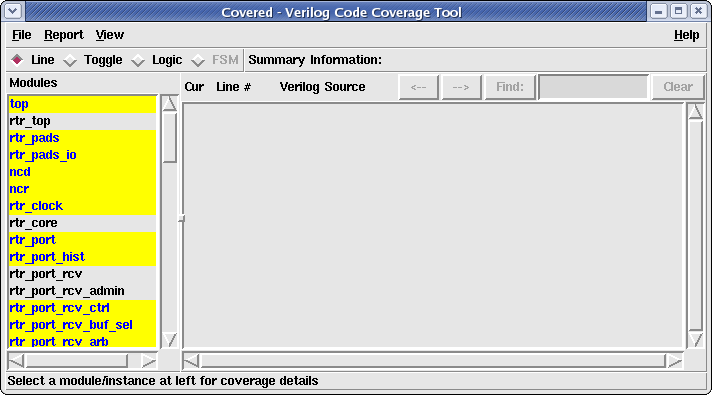

After a CDD file has been opened in the GUI, the module/instance selection box (shown in Figure 1 below) will contain either a list of all of the modules within the specified design or a list of all of the instances within the design, based on the type of report selected in the Report menu. Left-clicking on a module/instance name within this box will cause that file to be output in the File Viewer Window to the right of the selection box.
Figure 1. Covered Main Window Highlighting the Module/Instance Listbox

Depending on the selected coverage metric (specified in the Coverage Type View Bar) and the coverage results for each module/instance, a module/instance item will be highlighted in the uncovered logic color if the corresponding module/instance was found to have uncovered logic within that module/instance. If the specified module/instance was found to be fully covered for the currently selected metric, the name will remain unhighlighted. This can help the user quickly identify modules/instances that contain uncovered logic cases without having to systematically click on each name in the selection box and look at the summary coverage information to find these cases. Note that when a different coverage metric is selected, the highlights will be recalculated for that metric. Figure 2 below shows what the module/instance selection box looks like when populated with a CDD file. Note the names in the box that are highlighted (yellow) vs. not highlighted.
Figure 2. Populated Module/Instance Selection Box
